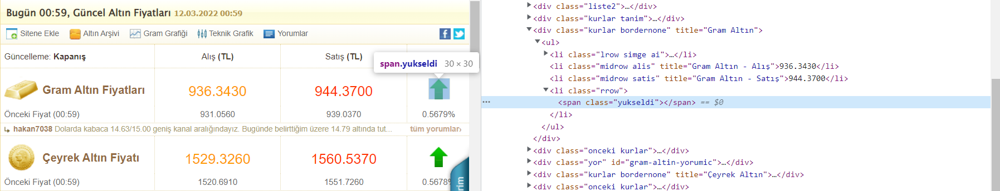

SORU :
Altin.in sitesine gidiniz.Bu sitede şart bloklarıyla kodlanmış alanları ekran görüntüsü üzerinde gösteriniz.
Artışı ve düşüşü gösteren kırmızı ve yeşil oklar şart blokları kullanılarak kodlanmış.
